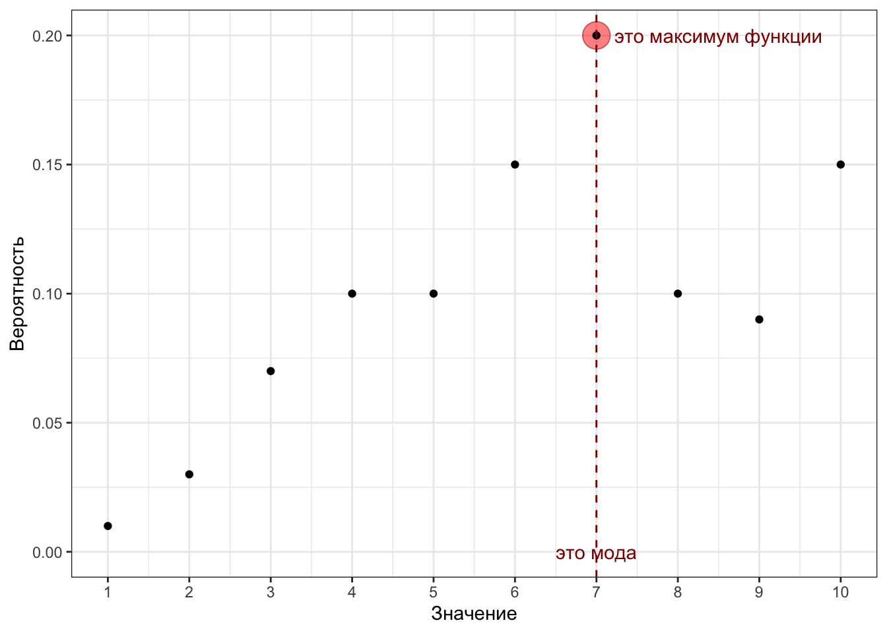

[1] 1 3 4 6 4 2 4 3 2 4 13 Меры центральной тенденции
Мы знаем, что наши переменные-признаки могут быть некоторым образом распределены — как в генеральной совокупности, так и в выборке. Как именно они распределены, описывается распределением случайной величины.
Вот мы собрали некоторые данные и получили какое-то эмпирическое распределение наших переменных. Нам бы, конечно, хотелось понять, что там такое за распределение. И первым шагом к пониманию этого будет описание распределения.
3.1 Виды статистики
Вообще статистика [как набор методов и инструментов] делится на два вида:
- Описательная статистика (descriptive statistics1) занимается обработкой статистических данных, их наглядным представлением, и собственно описанием через некоторые характеристики.
- Эти характеристики, количественно описывающие особенности имеющихся данных, называются описательными статистиками (descriptive statistics2).
- Задача описательной статистики — ёмко описать имеющиеся данные и составить на основе этих описаний общее представление о них, а также обнаружить особенности, которые могут повлиять на дальнейший анализ.
- Статистика вывода (inferential statistics) занимается поиском ответов на содержательные вопросы, которые мы задаем данным в ходе их анализа в рамках научных и практических исследований.
- Состоит из двух компонентов — тестирования статистических гипотез и статистических методов.
Замечание о машинном обучении
Вы наверняка не раз слышали словосочетание «машинное обучение». Это что-то, что время от времени становится то менее, то более хайпово. На самом деле, статистические методы лежат где-то между статистикой вывода и машинным обучением.
Почему?
Дело в том, что на статистические методы можно смотреть по-разному.
- Если нашей задачей является поиск ответов на исследовательские вопросы о закономерностях, о связи каких-либо факторов или влиянии переменных друг на друга, то мы будем смотреть на статистические модели с точки зрения статистики вывода. Это позволит нам находить ответы на интересующие нас вопросы — причем не важно, говорим мы о научных исследованиях или об исследованиях в индустрии.
- Если перед нами стоит задача хорошо предсказывать одни переменные на основании значений других — например, выдавать рекомендации на Яндекс Музыке или в Яндекс Лавке — то мы будем смотреть на те же статистические модели с точки зрения машинного обучения.
То есть, модели абсолютно одни и те же, но то, какую модель мы назовем хорошей и как мы эту «хорошесть» определим, будет различаться в зависимости от задачи — исследовательская или предиктивная — которая перед нами стоит.
Мы начнем знакомиться со статистикой с описательной статистики, а именно с мер центральной тенденции.
3.2 Меры центральной тенденции
Итак, мы хотим описать наши данные. Точнее, распределения переменных, которые у нас в данных есть. Хотим мы сделать это просто и ёмко. Насколько просто и ёмко? Ну, допустим максимально — одним числом. Кажется, значение переменной, которое лежит в центре распределения, неплохо для этого подойдет.
Как мы будем искать, что там в центре распределения? Зависит от шкалы, в которой измерена конкретная переменная.
| Шкала | Мера центральной тенденции |
|---|---|
| Номинальная | Мода |
| Порядковая | Медиана |
| Интервальная | Среднее арифметическое |
| Абсолютная | Среднее арифметическое, геометрическое и др. |
Однако есть некоторые нюансы.
3.2.1 Мода
Определение 3.1 Мода (mode) — наиболее часто встречающееся значение данной переменной.
Тут все достаточно просто и интуитивно понятно. Пусть у нас есть следующий ряд наблюдений:
Если мы составим таблицу частот, то получим следующее:
x
1 2 3 4 6
2 2 2 4 1 Очевидно, что \(4\) встречается чаще других значений — это и есть мода.
Понятно, что если на нашей шкале нет чисел, а есть текстовые лейблы, это ничего не меняет:
[1] "Москва" "Казань"
[3] "Кёнигсберг" "Барнаул (Алтайский край)"
[5] "Москва" "Санкт-Петербург"
[7] "Санкт-Петербург" "Москва"
[9] "Санкт-Петербург" "Москва"
[11] "Кёнигсберг" "Санкт-Петербург"
[13] "Москва" "Казань"
[15] "Санкт-Петербург" "Санкт-Петербург"
[17] "Казань" "Казань"
[19] "Санкт-Петербург" "Москва"
[21] "Москва" "Санкт-Петербург"
[23] "Санкт-Петербург" "Санкт-Петербург"
[25] "Санкт-Петербург" "Москва"
[27] "Кёнигсберг" "Санкт-Петербург"
[29] "Казань" y
Барнаул (Алтайский край) Казань Кёнигсберг
1 5 3
Москва Санкт-Петербург
8 12 Мода, получается, Санкт-Петербург.
Так мы поступаем с эмпирическим распределением. Если мы имеем дело с генеральной совокупностью, то можем формально определить моду через функцию вероятности (probability mass function, PMF). Модой будет являться значение случайной величины, при котором PMF принимает своё максимальное значение.
\[ \text{mode}(X) = \arg \max \big( \text{PMF}(X) \big) \]

Мода — 7.
3.2.2 Медиана
Определение 3.2 Медиана (median) — значение переменной, которые располагается на середине отсортированного ряда значений.
То есть, она делит все наблюдения переменной ровно пополам, и половина наблюдений оказывается по одну сторону от медианы, а половина — по другую.
Если у нас нечетное число наблюдений, то всё ясно. Пусть есть такой ряд наблюдений:
[1] 2 3 14 9 16 19 28 7 26 18 1Отсортируем его:
[1] 1 2 3 7 9 14 16 18 19 26 28Посмотрим в середину — найдем медиану:
[1] 14А что делать, если число наблюдений чётное? Ведь тогда середина ряда будет между двух чисел. Ну, возьмем их среднее арифметическое — это и будет медиана.
Возьмём такой ряд наблюдений:
[1] 14 10 9 16 30 3 25 8 18 7Отсортируем:
[1] 3 7 8 9 10 14 16 18 25 30Найдём медиану как \((10 + 14) / 2\):
[1] 12Формально это можно написать так:
\[ \text{median}(X) = \cases{ X_{\frac{n+1}{2}}, \quad \text{if} \, n \, \text{is odd} \\ \frac{X_{\frac{n}{2}} + X_{\frac{n}{2}+1}}{2}, \quad \text{otherwise} } \]
где \(X\) — ряд наблюдений данной переменной, \(n\) — число наблюдений, \(X_i\) — наблюдение с индексом \(i\) в сортированном векторе \(X\).
3.2.3 Среднее арифметическое
С этим существом все знакомы еще со школы.
Определение 3.3 Арифметическое среднее (arithmetic mean, mean, average) — сумма всех значений переменной, делёная на их количество.
Иначе говоря:
\[ \overline{X} = \frac{1}{n} \sum_{i=1}^n x_i \]
где \(\overline X\) — среднее арифметическое, \(x_i\) — наблюдение в векторе \(X\), \(n\) — количество наблюдений.
Ну, то есть всё сложить и поделить на количество того, чего сложили. Изи.
Вот, скажем, средние по двум рядам наблюдений, которые мы встречали в разделе про медиану:
[1] 2 3 14 9 16 19 28 7 26 18 1[1] 13 [1] 14 10 9 16 30 3 25 8 18 7[1] 143.2.4 Среднее взвешенное
Полезная вещь.
Часто бывает такая ситуация, что нас нужно посчитать среднее по каким-либо имеющимся параметрам, но одни параметры для нас важнее, чем другие. Например, мы хотим вычислить суммарный балл обучающегося за курс на основе ряда работ, выполненных в течение курса, однако мы понимаем, что тест из десяти вопросов с множественном выбором явно менее показателен, чем, например, аналитическое эссе или экзаменационная оценка. Что делать? Взвесить параметры!
Что значит взвесить? Умножить на некоторое число. На самом деле, любое. Пусть мы посчитали, что написать эссе в три абстрактных раза тяжелее, чем написать тест, а сдать экзамен в два раза тяжелее, чем написать эссе. Тогда мы можем присвоить баллу за тест вес
1 , баллу за аналитическое эссе вес
3 , а экзамену — вес
6 . Тогда итоговая оценка за курс будет рассчитываться следующим образом:
final score = 1 ⋅ test + 3 ⋅ essay + 6 ⋅ exam
Суперкласс. Однако! Весьма вероятно, что в учебном заведении принята единая система оценки для всех видов работ (ну, скажем, некая абстрактная десятибалльная система в сферическом вакууме). Получается, если и за тест, и за эссе, и за экзамен у студента по 10 баллов, то суммарный балл 100, что, кажется, больше, чем 10. Чтобы вернуться к изначальным границам баллов, нужно моделить суммарный балл на сумму весов параметров:
final score = 1 ⋅ test + 3 ⋅ essay + 6 ⋅ exam 1 + 3 + 6
Кайф! Собственно, это и есть взвешенное среднее. Коэффициенты, на которые мы умножаем значение парамернов, называются весами параметров. И в общем виде формула принимает следующий вид.
¯ x = ∑ n i = 1 w i x i ∑ n i = 1 w i = n ∑ i = 1
w ′ i x i ,
где
x i — значения конкретных параметров,
w i — веса конкретных параметров,
w ′ i — нормированные веса параметров.
Вторая часть формулы показывается нам, что можно облегчить себе вычислительную жизнь, если заранее нормировать веса, то есть разделить каждый коэффициент на сумму коэффициентов:
w ′ i = w i ∑ n i = 1 w i
Тогда сумма коэффициентов будет равна единице. Так чаще всего и поступают, так как тогда коэффициент будет представлять долю, которую весит данный параметр в суммарной оценке. Удобно, практично, красиво.
Взвещенное среднее часто применяется именно во всякого рода ассессментах, и не только образовательных. Например, вы HR-аналитик и оцениваете персонал. Вы аналитически вычисляете веса коэффициентов (допустим, с помощью линейной регрессии), а далее на их основе высчитаете интегральный балл, по которому будете оценивать сотрудников. Это как один из индустриальных примеров.
3.2.5 Другие средние
Среднее арифметическое не одиноко — есть и другие. Встретяться они вам примерно нигде — то есть о-о-о-очень редко и, скорее всего, в каком-то изощрённом виде. Но упомянуть их, пожалуй, стоит.
3.2.5.1 Геометрическое среднее
Редко встречается в научных работах, но заради общего представления пусть будет.
G X = n ⎷ n ∏ i = 1
x i = ( n ∏ i = 1
x i ) 1 n
3.2.5.2 Гармоническое
Суперэкзотичный покемон.
H X = n ∏ n i = 1 x i ∑ n i = 1 ( 1 x ∏ n j = 1 x j ) = n ∑ n i = 1 1 x i
3.2.5.3 Квадратичное
А вот это уже более полезная история. Мы с ним столкнёмся далее, правда под разными масками.
Квадратичное среднее (quadratic mean, root mean square, RMS) — это квадратный корень из среднего квадрата наблюдений. Ничего не понятно, поэтому по порядку.
есть наблюдение
x i
значит есть и его квадрат
x 2 i
мы умеем считать обычно среднее арифметическое, но ведь
x 2 i — это тоже наблюдение, просто в квадрате, так? значит можем посчитать среднее арифметическое квадратов наблюдений — средний квадрат ∑ n i = 1 x 2 i n
норм, а теперь извлечём из этого дела корень — получим то, что там надо X R M S = √ ∑ n i = 1 x 2 i n
Per se мы его вряд ли ещё когда-то увидим, но пару раз оно внезапно всплывет.
3.3 Сравнение мер центральной тенденции
Сравнивать будем моду, медиану и среднее [арифметическое].
Итак, все три статистики — мода, медиана и среднее — описывают центральную тенденцию — некоторое значение изучаемой нами переменной, вокруг которого собираются другие значения. Но если их три и все они используются, значит между ними должны быть какие-то различия. Посмотрим, какие.
Во-первых, очевидно, что моду невозможно посчитать для непрерывной переменной.
Нет, не очевидно Во-вторых, медиану нельзя посчитать на номинальной шкале. Кстати, почему?
Потому что В-третьих, среднее тоже нельзя посчитать на номинальной шкале.
Можно, но осторожно В-четвертых, для дискретной переменной значение среднего арифметического будет не особо осмысленно. Ну, скажем, странно сказать, что в аудитории в среднем стоят 15.86 столов или в российских семьях в среднем 1.5 ребенка. Конечно, в ряде случаев можно это как-то более-менее содержательно интерпретировать, но это требует усилий, а мы ленивые, поэтому лучше использовать медиану.
Итого, делаем следующие выводы:
для номинальной шкалы пригодна только мода для дискретных переменных подходят мода и медиана мода иногда лучше, так как точно всегда будет целым числом для непрерывных переменных подходят медиана и среднее Теперь нам надо разобраться, как будут себя вести меры центральной тенденции в зависимости от формы распределения.
На симметричном распределении мода, медиана и среднее совпадают [или, по крайней мере, находятся очень близко друг к другу]. Здесь и далее: красная линия — среднее, синяя — медиана, зелёная — мода.
На асимметричном распределении мода [практически] в пике. Практически, потому что функция плотности вероятности [черная линия на графике] на всегда точно аппроксимирует (в данном случае то же, что и сглаживает) эмпирическое распределение. На картинке ниже мы видим, что на гистограмме мода — самый высокий столбик, что и показывает нам зелёная линия, которой обозначена мода. Однако при сглаживании гистограммы пик немного съехал, и мода оказалась не совсем в вершине графика функции плотности вероятности.
Вообще-то это нормально, потому что мода для непрерывной величины, которую мы и визуализируем с помощью графика плотности, либо не может быть посчитана вовсе, либо — если так получилось, и у нас все же есть повторяющиеся значения — не слишком хорошая мера центральной тенденции. В целом, и на симметричном распределении мода тоже может находиться немного в стороне от пика.
На асимметричном распределении медиана и среднее смещены в сторону хвоста. Среднее смещено сильнее медианы. Это связано с тем, что медиана зависит только от количества наблюдений, а среднее ещё и от самих значений. На картинке ниже пример для распределения с правосторонней асимметрии (потому что хвост справа) — среднее (красная линия) правее медианы (синяя линия).
А это пример для распределения с левосторонней асимметрией (так как хвост слева) — среднее (красная линия) левее медианы (синяя линия).
Для того, чтобы лучше разобраться с тем, как большие и малые значения влияют на моду и медиану посмотрим такой пример. Пусть у нас есть оценки за выпускную квалификационную работу. Например, такие:
marks [1] 6 7 7 8 8 Посчитаем медиану и среднее:
median(marks) [1] 7 mean(marks) [1] 7.2
Среднее
7.2 округлиться до
7 , то есть можно считать, что среднее и медиана совпали. Ну, ок.
Но в комиссии сидят два требовательных доктора наук, которые поставили оценки, сильно отличающиеся от остальных:
marks [1] 6 7 7 8 8 3 4 Посчитаем медиану и среднее теперь:
median(marks) [1] 7 mean(marks) [1] 6.142857 Медиана осталась на месте — всё ещё
7 . А вот среднее
6.1 округлится до
6 . Казалось бы, это немного, но в смысле оценок — это прилично, и может сильно повлиять на GPA.
Итого, среднее более чувствительно к нетипичным значениям (очень большим или очень малым).
Есть ещё один интересный вариант распределений — бимодальные. Значит ли, что у этого распределения две моды? Не всегда. Посмотрим пример ниже:
Мы видим, что на графике есть два пика, однако строго математически мода одна (зеленая линия) — и она в более высоком пике. Это логично, ибо там самые часто встречающиеся значения.
И все жё содержательно мы не можем пренебречь вторым пиком. Почему нам он важен? Обычно бимодальное распределение — это повод задуматься о том, что наша выборка неоднородна. Бимодальное распределение как бы сложено из двух с центрами в двух пиках. То есть в нашей выборке как будто бы две подвыборки, которые обладают разными распределениями интересующего нам признака.
Что с этим делать? Хорошо всегда иметь в данным какие-либо дополнительные переменные — как минимум соцдем — чтобы мы могли по данным попытаться предположить, какую группировку мы могли забыть учесть при планировании исследования.
Со средним и медианой происходит примерно то же, что и в случае асимметричного распределения. Второй пик смещает к себе обе меры центральной тенденции, причем среднее вновь сильнее, чем медиану.
3.4 Свойства среднего арифметического
Если к каждому значению распределения прибавить некоторое число (константу), то среднее увеличится на это же константу. M x + c = M x + c
Вот почему:
M x + c = ∑ n i = 1 ( x i + c ) n = ∑ n i = 1 x i + n c n = ∑ n i = 1 x i n + c = M x + c
Иначе говоря, распределение просто сдвинется. Например, если к каждому значению синего распределения прибавить
2 , получится красное:
Если каждое значение распределение умножить на некоторое число (константу), то среднее увеличится во столько же раз. M x × c = M x × c
Вот почему:
M x × c = ∑ n i = 1 ( x i × c ) n = c × ∑ n i = 1 x i n = ∑ n i = 1 x i n × c = M x × c
Например, здесь каждое значение синего распределения умножили на
3 и получили красное:
Тут, правда, явно что-то ещё произошло, но мы пока этого не знаем. Однако, отметит этот факт.
Сумма отклонений от среднего значения равна нулю. n ∑ i = 1
( x i − M x ) = 0
Элегантное доказательство:
n ∑ i = 1
( x i − M x ) = n ∑ i = 1
x i − n ∑ i = 1
M x = n ∑ i = 1
x i − n M x = = n ∑ i = 1
x i − n × 1 n n ∑ i = 1
x i = n ∑ i = 1
x i − n ∑ i = 1
x i = 0
Но можно это осмыслить и более просто графически.
Отклонение — это разность между средним и конкретным значением переменной. И, действительно, так как среднее находится в центре распределения, то часть значений лежит справа, а часть слева. Значит, будут как положительные, так и отрицательные отклонения — и их сумма в итоге будет равна нулю.